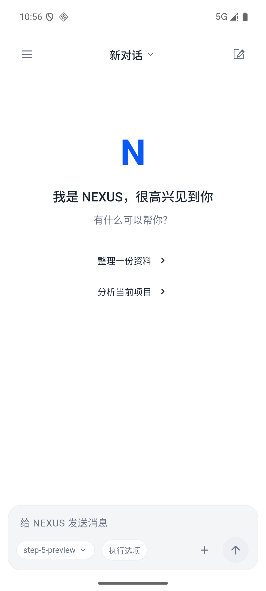
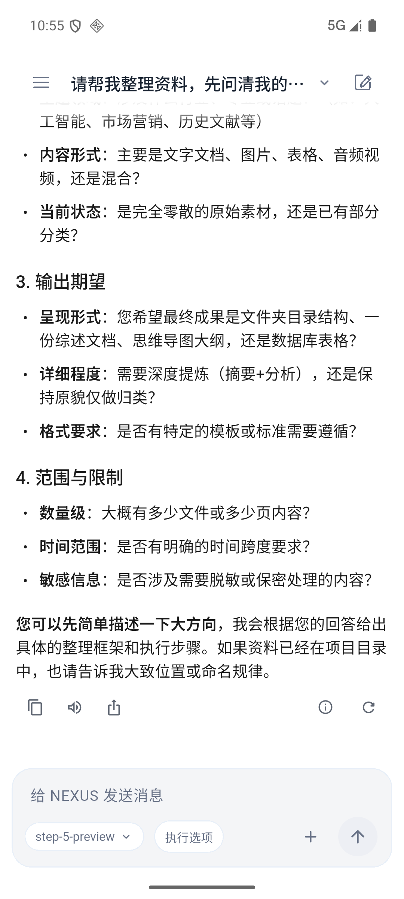

聊天页精修
2026-10-23 · Android 模拟器实际截图


本次落实
- 收紧正文、标题与列表间距，减少段距叠加；分隔线改为细线。
- 回复的模型与耗时收进信息按钮，保留复制、朗读、分享与重新生成。
- 输入区的模型与执行选项靠左，附件与发送靠右；修正模型过早截断和窄屏溢出。
- 已完成的思考过程弱化背景与边框，保留展开入口。
- 顶栏去掉重复的水平留白，长标题可通过提示查看全文。
验证范围
最终布局的 61 项相关回归通过，覆盖窄屏、大字体、明暗主题、键盘布局、暂停状态及消息交互。4 个相关组件的静态检查通过。模拟器已核对空白会话与已有长回复，未发起新的模型请求。
本轮验收范围为聊天页精修；不代表其他 Android 页面已逐屏重新验收。